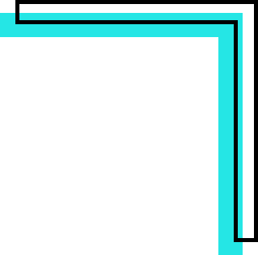
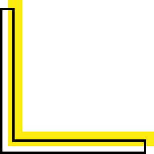

; ?>/images/logotitre.png)
Qui suis-je ?
Bonjour! Je suis Marie-Pier Chassé, designer qui ne peux pas vivre sans son agenda et ses beaux crayons. Je suis passionnée par la création autant à l'ordinateur qu'à la main. J'habite présentement sur la Rive-Sud de Montréal avec mon conjoint et mes chats. Quand je ne suis pas à l'ordinateur, vous me trouverez dans la cuisine ou devant la télévision.

